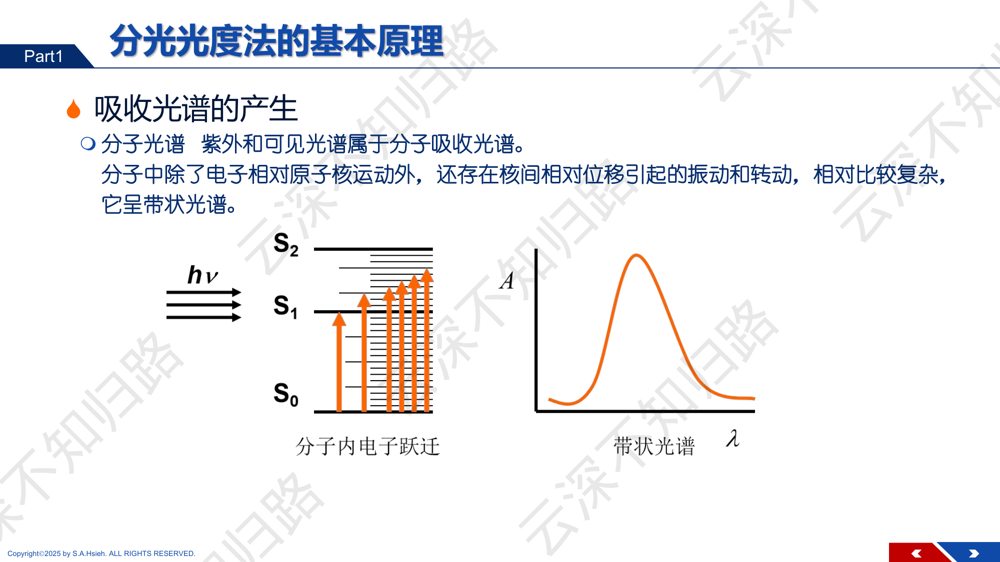
PPT: 分光光度法基本原理 — 分子光谱
PPT: 分子光谱 — 电子跃迁与带状光谱
紫外和可见光谱属于分子光谱。分子中除了电子相对原子核运动外，还存在核间相对位移引起的振动和转动，它呈带状光谱，相对比较复杂。
分子吸收光子时，发生电子跃迁（$S_0 \to S_1, S_2$），吸收的能量对应特定波长。
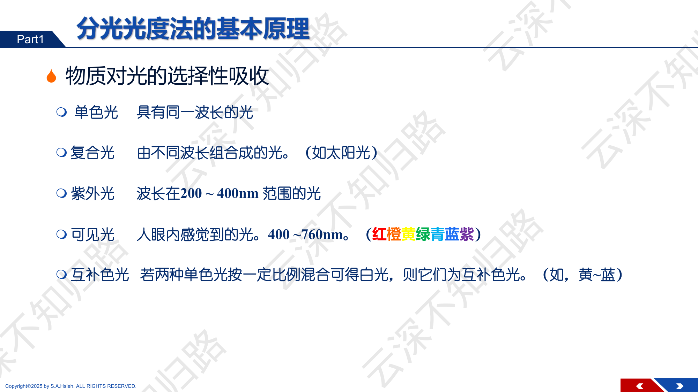
PPT: 单色光、复合光与互补色光
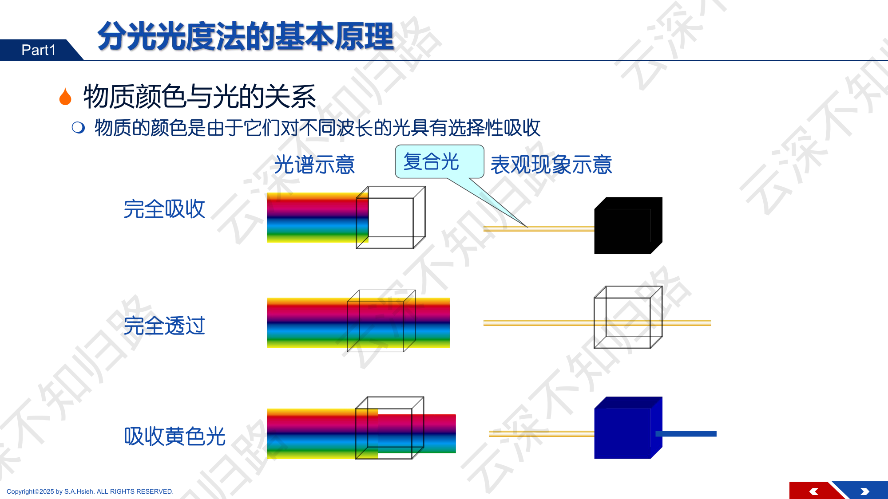
PPT: 物质对光的选择性吸收与颜色
物质的颜色是由于它们对不同波长的光具有选择性吸收：
| 区域 | 波长范围 | 分析方法 |
|---|---|---|
| 紫外光 (UV) | 200~400 nm | 紫外分光光度法 |
| 可见光 (Vis) | 400~760 nm | 可见分光光度法 |
| 近红外 | 760~2500 nm | 近红外光谱法 |
| 红外 (IR) | 2.5~25 $\mu$m | 红外光谱法 |
物质呈现的颜色是它吸收光的互补色。
| 吸收光颜色 | 吸收波长 / nm | 呈现颜色（互补色） |
|---|---|---|
| 紫 | 400~450 | 黄绿 |
| 蓝 | 450~480 | 黄 |
| 绿蓝 | 480~490 | 橙 |
| 蓝绿 | 490~500 | 红 |
| 绿 | 500~560 | 紫红 |
| 黄绿 | 560~580 | 紫 |
| 黄 | 580~600 | 蓝 |
| 橙 | 600~650 | 绿蓝 |
| 红 | 650~760 | 蓝绿 |
以波长 $\lambda$ 为横轴、吸光度 $A$ 为纵轴绘制的曲线即吸收光谱（吸收曲线）。
吸光度最大处对应的波长称为最大吸收波长 $\lambda_{max}$，在此波长下测量灵敏度最高。
当溶液浓度增大时：
即吸收曲线的形状和峰位不变，只是整条曲线在纵轴方向等比例上移。
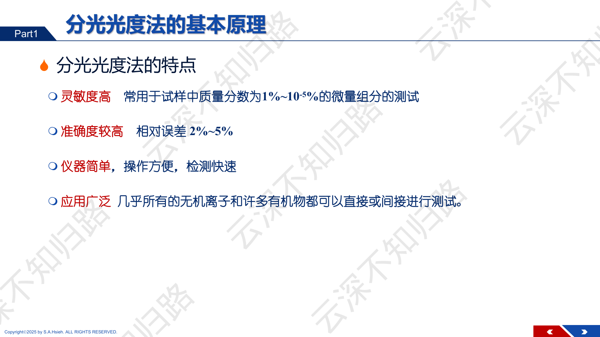
PPT: Lambert-Beer定律
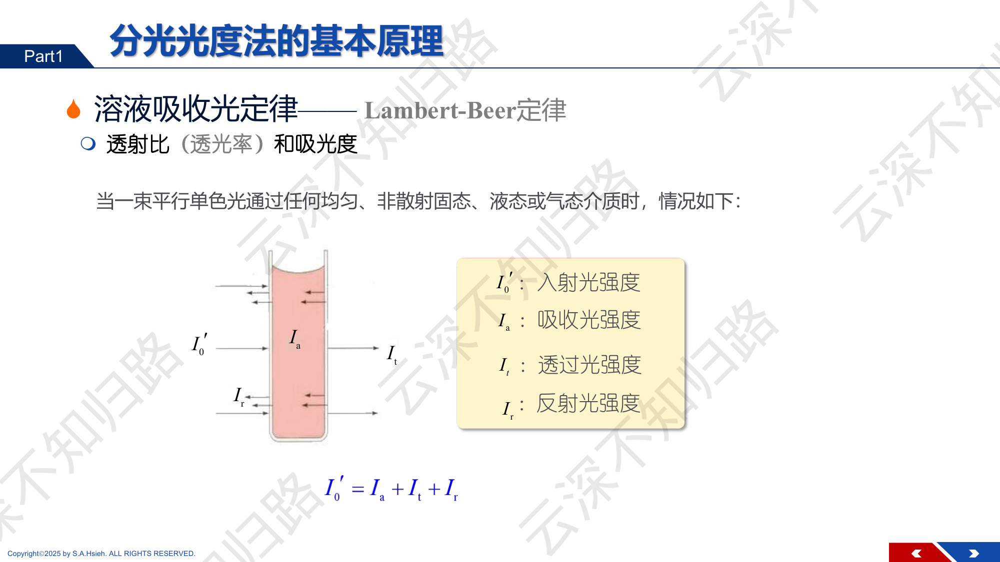
PPT: 入射光通过溶液的光强分配
当一束平行单色光通过任何均匀、非散射固态、液态或气态介质时：
$$I'_0 = I_a + I_t + I_r$$其中 $I'_0$ 为入射光强度，$I_a$ 为吸收光强度，$I_t$ 为透过光强度，$I_r$ 为反射光强度。
入射光垂直照射，反射光强很小；同时采用参比溶液进行校正，$I_r$ 的影响可以相互抵消。因此实际处理中：
$$I_0 = I_a + I_t$$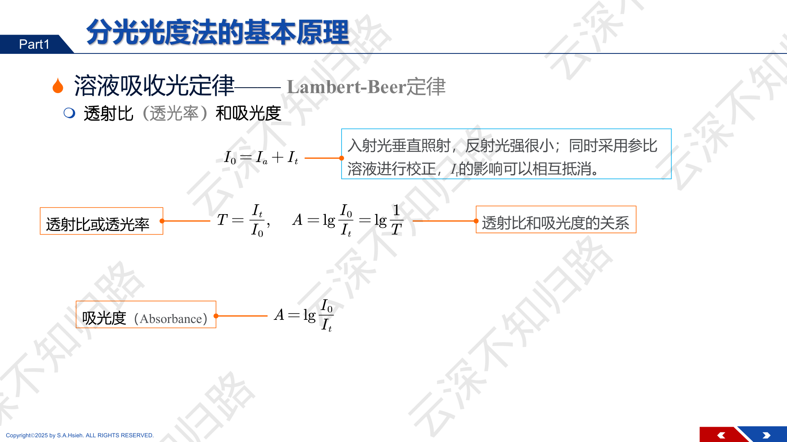
PPT: 透射比与吸光度的定义
Lambert 定律（1760年）：当一束单色光通过均匀的透明介质时，吸光度与光程长度 $b$ 成正比：
$$A \propto b$$Beer 定律（1852年）：当一束单色光通过均匀的吸光物质溶液时，吸光度与溶液浓度 $c$ 成正比：
$$A \propto c$$将两者联合，得到 Lambert-Beer 定律：
其中：
透射比与吸光度示意
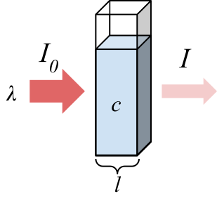
Beer 定律：浓度↑ → 吸光度↑
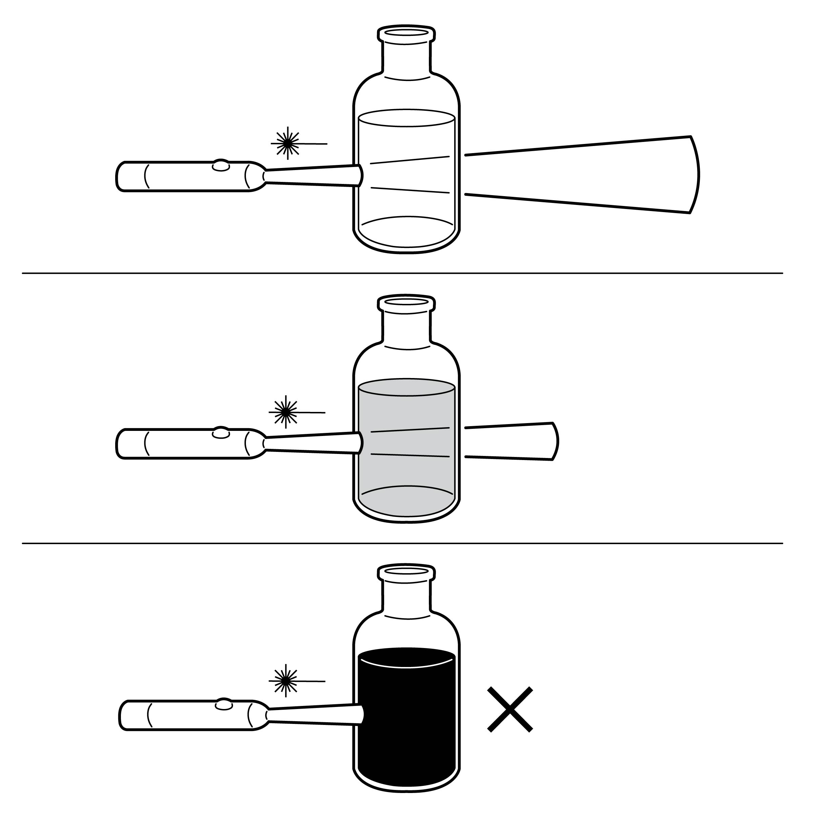
透射比定义为透射光强度与入射光强度之比：
$$T = \frac{I}{I_0}$$吸光度与透射比的换算关系：
$$\boxed{A = -\lg T = \lg\frac{1}{T} = \lg\frac{I_0}{I}}$$常见换算：
| $T$（%T） | $A$ | $T$（%T） | $A$ |
|---|---|---|---|
| 100% | 0 | 10% | 1.000 |
| 80% | 0.097 | 5% | 1.301 |
| 50% | 0.301 | 1% | 2.000 |
| 36.8% | 0.434 | 0.1% | 3.000 |
| 30% | 0.523 | 0.01% | 4.000 |
| 20% | 0.699 | 0% | $\infty$ |
某溶液的透射比 $T = 30\%$，求其吸光度。
$A = -\lg T = -\lg(0.30) = 0.5229$
吸光度的加和性：多组分混合体系中
$$A_{总} = A_1 + A_2 + \cdots = \kappa_1 bc_1 + \kappa_2 bc_2 + \cdots$$这是多组分同时测定的理论基础。
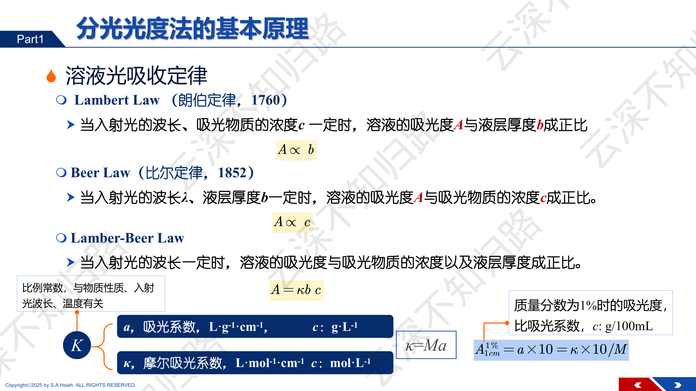
PPT: Beer 定律的不同表达形式
| 表达式 | 比例系数 | 单位 | 浓度单位 |
|---|---|---|---|
| $A = abc$ | $a$（吸光系数） | $\text{L} \cdot \text{g}^{-1} \cdot \text{cm}^{-1}$ | $c$：$\text{g/L}$ |
| $A = \kappa bc$ | $\kappa$（摩尔吸光系数） | $\text{L} \cdot \text{mol}^{-1} \cdot \text{cm}^{-1}$ | $c$：$\text{mol/L}$ |
两者的换算关系：
$$\boxed{\kappa = a \times M}$$其中 $M$ 为吸光物质的摩尔质量（$\text{g/mol}$）。
当浓度用比吸光系数表示时：$A_{1\text{cm}}^{1\%} = a \times 10 = \kappa \times 10/M$（即浓度为 1 g/100mL、光程 1 cm 时的吸光度）。
第一步：由 $T$ 求 $A$
$$A = -\lg T = -\lg(0.30) = 0.5229$$第二步：由 Beer 定律求 $\kappa$
$$\kappa = \frac{A}{bc} = \frac{0.5229}{1 \times 1.2 \times 10^{-9}} = 4.4 \times 10^{8}\;\text{L} \cdot \text{mol}^{-1} \cdot \text{cm}^{-1}$$
PPT：灵敏度指标（κ 和 Sandell 灵敏度 S）
$\kappa$ 越大，灵敏度越高。$\kappa$ 的物理意义：当 $c = 1\;\text{mol/L}$，$b = 1\;\text{cm}$ 时的吸光度。
| $\kappa$ 范围 / ($\text{L} \cdot \text{mol}^{-1} \cdot \text{cm}^{-1}$) | 灵敏度评价 |
|---|---|
| $< 10^4$ | 低灵敏度 |
| $10^4 \sim 5 \times 10^4$ | 中等灵敏度 |
| $6 \times 10^4 \sim 10^5$ | 高灵敏度 |
| $> 10^5$ | 超高灵敏度 |
物理意义：当 $A = 0.001$ 时，光程截面 1 cm$^2$ 上所含被测物质的质量（$\mu$g）。$S$ 越小，方法越灵敏。
用邻菲罗啉法测 Fe$^{2+}$，$\kappa = 1.1 \times 10^4$ L/(mol·cm)，$M_{Fe} = 55.85$ g/mol。求 Sandell 灵敏度。
即当 $A = 0.001$ 时，每 cm$^2$ 截面上有 0.0051 $\mu$g 的铁。$S$ 值小，说明方法灵敏。
(1) $A = \lg\dfrac{1}{T} = \lg\dfrac{1}{0.199} = 0.701$
(2) 浓度 $c = \dfrac{50.0 \times 10^{-6}}{50.0 \times 10^{-3}} = 0.001\;\text{g/L}$
(3) $a = \dfrac{A}{bc} = \dfrac{0.701}{2.0 \times 0.001} = 350.5\;\text{L} \cdot \text{g}^{-1} \cdot \text{cm}^{-1}$
(4) $\kappa = Ma = 92.91 \times 350.5 = 3.26 \times 10^4\;\text{L} \cdot \text{mol}^{-1} \cdot \text{cm}^{-1}$
(5) $S = \dfrac{M}{\kappa} = \dfrac{92.91}{3.26 \times 10^4} = 2.85 \times 10^{-3}\;\mu\text{g/cm}^2$

PPT：浓度相对误差曲线（Δc/c vs T 或 A，A=0.434时误差最小）
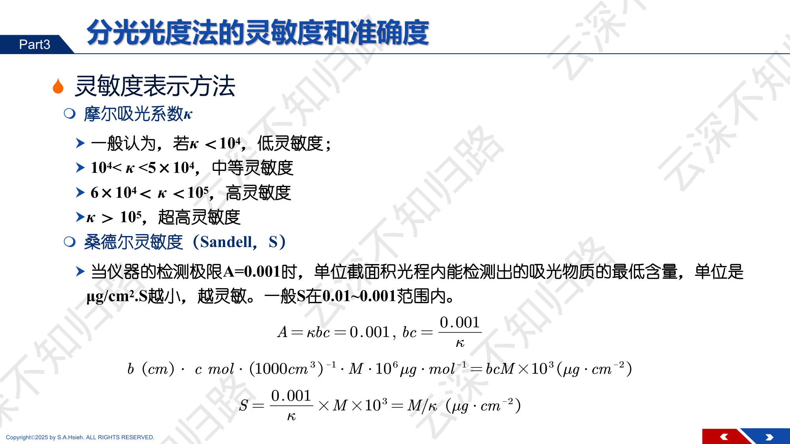
PPT: 偏离Beer定律的因素

PPT：偏离 Beer 定律的原因详解（物理因素+化学因素）
浓度的相对误差 $\frac{dc}{c}$ 与透射比 $T$ 的关系：
$$\frac{dc}{c} = \frac{0.434}{\lg T} \cdot \frac{dT}{T}$$当 $dT/T$ 恒定时（光度计读数误差恒定），$\frac{dc}{c}$ 在 $T = 36.8\%$（$A = 0.434$）时最小。
实际最佳测量范围：
$$\boxed{A = 0.2 \sim 0.8\;\;(T = 15\% \sim 65\%)}$$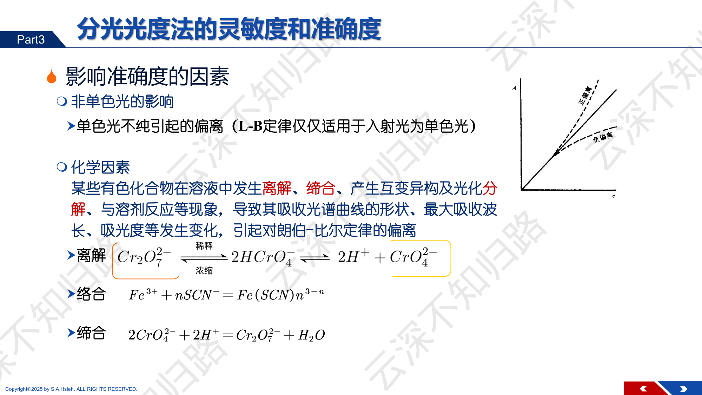
PPT: 化学因素引起的偏离
某些有色化合物在溶液中发生离解、缔合、产生互变异构及光化分解，与溶剂反应等现象，导致其吸收光谱曲线的形状、最大吸收波长、吸光度等发生变化，引起对 Beer 定律的偏离。
在 $\text{K}_2\text{Cr}_2\text{O}_7$ 溶液中存在如下平衡：
$$\text{Cr}_2\text{O}_7^{2-} + \text{H}_2\text{O} \rightleftharpoons 2\text{CrO}_4^{2-} + 2\text{H}^+$$$\text{Cr}_2\text{O}_7^{2-}$ 为橙色（$\lambda_{max} = 350$ nm），$\text{CrO}_4^{2-}$ 为黄色（$\lambda_{max} = 372$ nm）。
当改变溶液浓度时，平衡发生移动，两种铬物种的比例发生变化。若在 350 nm 或 372 nm 处测量，吸光度将不与总铬浓度成正比 --- 这就是化学因素引起的偏离。
解决方法：控制溶液 pH 使平衡完全偏向一侧（如加入 NaOH 使全部转化为 $\text{CrO}_4^{2-}$），或选择等吸收点波长（两物种 $\kappa$ 相等处）。
酸碱指示剂（如甲基橙）是弱酸或弱碱，其酸式和碱式的颜色不同。改变浓度时，溶液的 pH 可能微弱变化，导致指示剂的酸碱式比例改变，从而使吸光度偏离 Beer 定律。
解决方法：使用缓冲溶液控制 pH。
Beer 定律要求入射光为严格单色光（仅含一个波长）。但实际仪器的单色器只能分出一个有限带宽的窄带光。
设通带含 $\lambda_1$ 和 $\lambda_2$ 两个波长，在这两个波长处物质的摩尔吸光系数分别为 $\kappa_1$ 和 $\kappa_2$。若 $\kappa_1 \neq \kappa_2$，实测吸光度为：
$$A_{测} = \lg\frac{I_0^{(\lambda_1)} + I_0^{(\lambda_2)}}{I_0^{(\lambda_1)} \cdot 10^{-\kappa_1 bc} + I_0^{(\lambda_2)} \cdot 10^{-\kappa_2 bc}}$$这与理想的 $A = \kappa bc$ 之间存在偏差，浓度越高偏差越大 --- 产生负偏离（即实测 $A$ 低于理论值）。
为什么在 $\lambda_{max}$ 处测量偏差最小？
因为在吸收峰顶附近，吸收曲线较为平坦，通带内各波长处的 $\kappa$ 差异最小，$\kappa_1 \approx \kappa_2$，从而使非单色光引起的偏差最小。同时，$\lambda_{max}$ 处灵敏度最高。
所有上述因素（非单色光、杂散光、化学平衡移动、浓度过高等）都会导致 Beer 定律偏离。答案选"以上都是"。
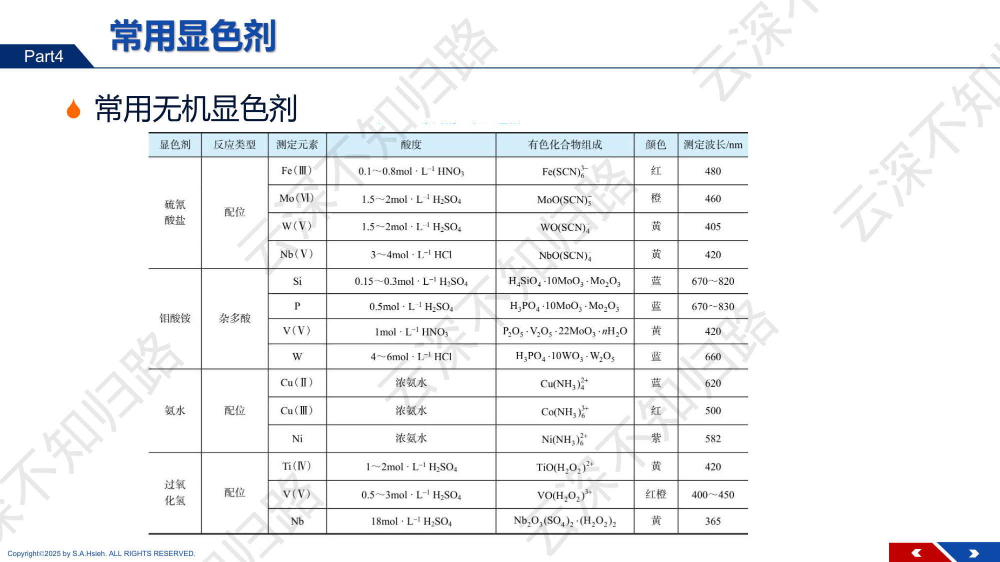
PPT: 显色反应条件的选择
显色剂颜色与有色化合物之间的颜色差别要大，即 $\Delta\lambda > 60\;\text{nm}$（测量波长与试剂最大吸收波长之差）。
PPT: 有机显色剂的特点
| 显色剂 | 测定离子 | $\lambda_{max}$/nm | $\kappa$/(L·mol$^{-1}$·cm$^{-1}$) | 产物颜色 |
|---|---|---|---|---|
| 1,10-邻菲罗啉（phen） | $\text{Fe}^{2+}$ | 510 | $1.1 \times 10^4$ | 橙红 |
| 双硫腙（dithizone） | $\text{Pb}^{2+}$, $\text{Hg}^{2+}$, $\text{Zn}^{2+}$ | 各异 | $10^4 \sim 10^5$ | 红色 |
| 二甲酚橙（XO） | $\text{Bi}^{3+}$, $\text{Zr}^{4+}$ | 各异 | $10^4$ | 紫红 |
| 铬天青 S | $\text{Al}^{3+}$ | 620 | $10^5$（加 CPC） | 蓝色 |
| 过氧化氢 | $\text{Ti}^{4+}$ | 410 | $7.4 \times 10^2$ | 黄色 |
| 丁二酮肟 | $\text{Ni}^{2+}$ | 470 | $1.4 \times 10^4$ | 红色 |
| 磺基水杨酸 | $\text{Fe}^{3+}$ | 各异 | $10^3$ | 紫/黄/红 |
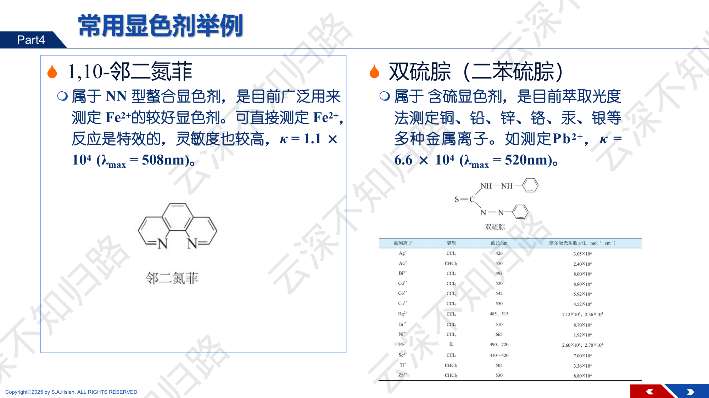
PPT: 邻二氮菲与双硫腙
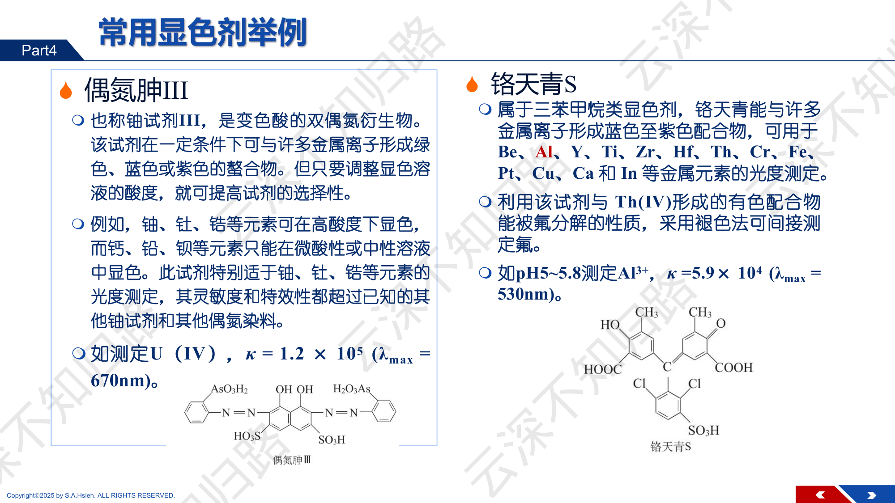
PPT: 偶氮胂 III 和铬天青 S
产物为橙红色，$\lambda_{max} = 510$ nm，$\kappa = 1.1 \times 10^4$ L/(mol·cm)。
还原反应：
$$2\text{Fe}^{3+} + 2\text{NH}_2\text{OH} \longrightarrow 2\text{Fe}^{2+} + \text{N}_2 + 2\text{H}_2\text{O} + 2\text{H}^+$$
PPT：波长选择原则

PPT：显色条件选择（pH、时间、温度、用量）
一般选择 $\lambda_{max}$ 以获得最高灵敏度。
若在 $\lambda_{max}$ 处有干扰物质吸收，可选择灵敏度稍低但选择性更好的波长。
| 参比溶液 | 适用情况 | 消除的影响 |
|---|---|---|
| 纯溶剂（蒸馏水） | 显色剂和其他试剂在测量波长无吸收 | 比色皿反射、溶剂吸收 |
| 试剂空白 | 显色剂在测量波长有吸收（最常用） | 比色皿 + 溶剂 + 试剂吸收 |
| 试样空白 | 试样溶液本身有背景吸收 | 比色皿 + 溶剂 + 试剂 + 试样基体吸收 |
配制一系列被测物浓度相同、pH 不同的溶液，加入相同量的显色剂，在 $\lambda_{max}$ 处测量吸光度。以 pH 为横轴，$A$ 为纵轴作图。
曲线中 $A$ 最大且恒定的 pH 区间即为最佳 pH 范围。在此范围内显色反应最完全、产物最稳定。
固定被测物浓度和 pH，改变显色剂浓度 $c_R$，测量 $A$。以 $c_R$ 为横轴，$A$ 为纵轴作图。
曲线中 $A$ 趋于恒定的最小 $c_R$ 值即为最佳用量下限。通常取略高于此值的用量（适当过量），但不宜过多（避免空白值增大或形成其他络合物）。
配制一系列已知浓度的标准溶液，在相同条件下测量吸光度，绘制 $A$-$c$ 标准曲线。然后在相同条件下测量试样的吸光度，从标准曲线上查得浓度。
适用于基体效应显著但无法完全模拟基体时。
取多份相同体积的试样，分别加入不同量的标准溶液（其中一份不加），显色定容后测量吸光度。
以加入标准溶液的浓度 $c_s$ 为横轴，$A$ 为纵轴作图，外推直线与横轴交点的绝对值即为试样浓度 $c_x$。
未加标准的试样：
$$A_x = \kappa \cdot b \cdot c_x$$加入标准后：
$$A_{x+s} = \kappa \cdot b \cdot (c_x + c_s)$$两式相除：
$$\frac{A_x}{A_{x+s}} = \frac{c_x}{c_x + c_s}$$解出：
$$\boxed{c_x = \frac{A_x \cdot c_s}{A_{x+s} - A_x}}$$取 10.00 mL 含 Cu$^{2+}$ 的试液，加入显色剂后定容至 50.00 mL，测得 $A_x = 0.320$。另取 10.00 mL 相同试液，加入 1.00 mL 浓度为 $1.00 \times 10^{-3}$ mol/L 的 Cu$^{2+}$ 标准溶液，同样处理后测得 $A_{x+s} = 0.480$。求试液中 Cu$^{2+}$ 浓度。
加入标准后，定容体积仍为 50.00 mL，加入 Cu$^{2+}$ 的量为：
$$c_s = \frac{1.00 \times 10^{-3} \times 1.00}{50.00} = 2.00 \times 10^{-5}\;\text{mol/L}$$由标准加入法公式：
$$c_x = \frac{A_x \cdot c_s}{A_{x+s} - A_x} = \frac{0.320 \times 2.00 \times 10^{-5}}{0.480 - 0.320} = \frac{6.40 \times 10^{-6}}{0.160} = 4.00 \times 10^{-5}\;\text{mol/L}$$这是定容后的浓度。试液原始浓度为：
$$c_{原} = 4.00 \times 10^{-5} \times \frac{50.00}{10.00} = 2.00 \times 10^{-4}\;\text{mol/L}$$PPT: 示差光度法原理
用标准溶液（而非空白）作参比，测量试样与标准之间吸光度的差值，扩大了可测量的浓度范围，提高了高浓度样品的测量精度。
适用于常规方法中吸光度超出最佳范围（$A > 0.8$）的高浓度样品。
高浓度标准溶液作参比：将已知浓度为 $c_r$ 的标准溶液放在参比光路中，仪器调零（设其 $T = 100\%$，即 $A = 0$）。
试样的真实吸光度 $A_x = \kappa b c_x$，标准的真实吸光度 $A_r = \kappa b c_r$。
示差法测得的吸光度：
$$\Delta A = A_x - A_r = \kappa b (c_x - c_r)$$由此可知：即使 $A_x$ 本身很大（如 $A_x = 2.5$），只要 $c_x$ 与 $c_r$ 相差不大，$\Delta A$ 可以落在最佳测量范围 0.2~0.8 内，大大提高了测量精度。
某高浓度溶液的 $A = 2.200$，用浓度 $c_r$ 的标准溶液（$A_r = 2.000$）作参比。求示差法测得的读数。
$\Delta A = 0.200$ 落在最佳范围内，精度远优于直接测量 $A = 2.200$。
选择两个波长 $\lambda_1$ 和 $\lambda_2$，测量同一溶液在两个波长下吸光度之差：$\Delta A = A_{\lambda_1} - A_{\lambda_2}$
若干扰物在两个波长下的吸光度相等（等吸收点），则 $\Delta A$ 只与被测物有关，消除了干扰和背景影响。
基于吸光度的加和性。对 $n$ 个组分，在 $n$ 个波长处分别测量：
$$A_{\lambda_i} = \sum_{j=1}^{n} \kappa_{j,\lambda_i} \cdot b \cdot c_j \quad (i = 1, 2, \ldots, n)$$解联立方程组即可求出各组分浓度。
| $c_{Fe}$ / ($\mu$g/mL) | 0 | 0.5 | 1.0 | 2.0 | 3.0 | 4.0 |
|---|---|---|---|---|---|---|
| $A$ | 0.000 | 0.098 | 0.200 | 0.395 | 0.600 | 0.790 |
试样溶液测得 $A_x = 0.350$，求铁浓度。
从标准曲线可得斜率 $\approx 0.198\;\text{mL}/\mu\text{g}$（由线性回归），$A_x = 0.350$ 对应
$c_x = \frac{0.350}{0.198} \approx 1.77\;\mu\text{g/mL}$
某溶液含有 $\text{KMnO}_4$ 和 $\text{K}_2\text{Cr}_2\text{O}_7$。在 545 nm 和 440 nm 处测量吸光度（$b = 1$ cm）。已知：
| $\kappa_{545}$ / (L·mol$^{-1}$·cm$^{-1}$) | $\kappa_{440}$ / (L·mol$^{-1}$·cm$^{-1}$) | |
|---|---|---|
| $\text{KMnO}_4$ | 2350 | 120 |
| $\text{K}_2\text{Cr}_2\text{O}_7$ | 370 | 3680 |
混合液测得 $A_{545} = 0.640$，$A_{440} = 0.550$。求两组分浓度。
设 $\text{KMnO}_4$ 浓度为 $c_1$，$\text{K}_2\text{Cr}_2\text{O}_7$ 浓度为 $c_2$（mol/L）。建立方程组：
$$2350\,c_1 + 370\,c_2 = 0.640 \quad \cdots(1)$$ $$120\,c_1 + 3680\,c_2 = 0.550 \quad \cdots(2)$$由 (1)：$c_1 = \frac{0.640 - 370\,c_2}{2350}$
代入 (2)：$120 \times \frac{0.640 - 370\,c_2}{2350} + 3680\,c_2 = 0.550$
$\frac{76.8 - 44400\,c_2}{2350} + 3680\,c_2 = 0.550$
$76.8 - 44400\,c_2 + 8648000\,c_2 = 1292.5$
$8603600\,c_2 = 1215.7$
$c_2 = 1.41 \times 10^{-4}$ mol/L
$c_1 = \frac{0.640 - 370 \times 1.41 \times 10^{-4}}{2350} = \frac{0.640 - 0.0522}{2350} = 2.50 \times 10^{-4}$ mol/L
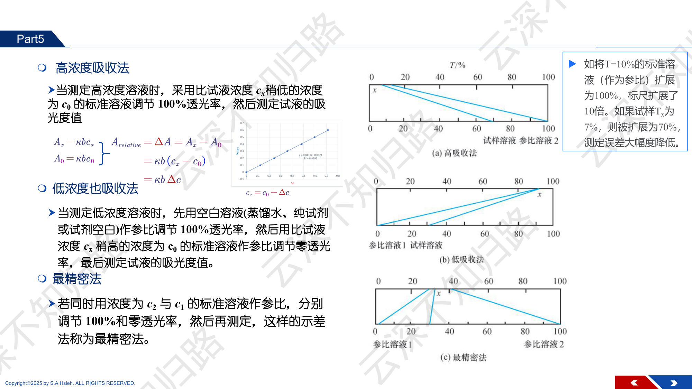
PPT: 络合物组成测定 — 等摩尔连续变化法与摩尔比法

PPT：摩尔比法与连续变化法详解

PPT：光度滴定法（A vs V 作图，折线交点为终点）

PPT：双波长法（消除背景吸收干扰）

PPT：光度法测酸碱离解常数
固定金属离子 M 的浓度，改变配位体 L 的浓度（或反之），测量吸光度 $A$。以 $c_L/c_M$（摩尔比）为横轴，$A$ 为纵轴作图。
曲线由两段直线组成：配位前 $A$ 随 $c_L/c_M$ 线性增大，配位饱和后 $A$ 趋于恒定。两段直线交点处的 $c_L/c_M$ 即为络合比 $n$。
固定 $c_M = 2.0 \times 10^{-5}$ mol/L，改变配位体 L 的浓度，测量吸光度：
| $c_L/c_M$ | 0.5 | 1.0 | 1.5 | 2.0 | 2.5 | 3.0 | 3.5 | 4.0 |
|---|---|---|---|---|---|---|---|---|
| $A$ | 0.12 | 0.24 | 0.36 | 0.44 | 0.44 | 0.45 | 0.44 | 0.45 |
$A$ 在 $c_L/c_M = 0.5 \sim 1.5$ 线性增长，在 $c_L/c_M \geq 2.0$ 后趋于恒定。
两段直线外推交点在 $c_L/c_M = 2$，因此 $n = 2$，络合物组成为 $\text{ML}_2$。
保持 $c_M + c_L = c$（总浓度恒定），改变 $c_M/(c_M + c_L)$ 的比值（从 0 到 1），测量吸光度。
以 $x = c_M/(c_M + c_L)$ 为横轴，$A$（或校正后的 $A$）为纵轴作图，曲线极大值处对应的 $x$ 值满足：
$$n = \frac{1 - x_{max}}{x_{max}}$$例如 $x_{max} = 0.5$ 时 $n = 1$（1:1 络合），$x_{max} = 0.33$ 时 $n = 2$（1:2 络合），$x_{max} = 0.25$ 时 $n = 3$（1:3 络合）。
如果络合物非常稳定（$K$ 极大），则 Job 曲线在极大值处呈尖锐的角状（两段直线交叉）。若稳定性较低，极大值附近曲线明显弯曲。弯曲程度越大，说明离解越显著，$K$ 越小。
可以定量估算 $K$：将极大值处外推直线的 $A$ 值（$A_{ext}$）与实测最大 $A$ 值（$A_{max}$）进行比较。离解度 $\alpha$ 近似为：
$$\alpha \approx 1 - \frac{A_{max}}{A_{ext}}$$| $c_{Fe}/(c_{Fe}+c_{phen})$ | 0.1 | 0.2 | 0.25 | 0.3 | 0.4 | 0.5 |
|---|---|---|---|---|---|---|
| $A$ | 0.10 | 0.19 | 0.22 | 0.19 | 0.15 | 0.10 |
$A$ 最大值在 $x_{max} \approx 0.25$ 处。
$n = \frac{1 - 0.25}{0.25} = 3$
络合物组成为 $\text{Fe(phen)}_3^{2+}$，即 1:3 络合。
| 方法 | 操作 | 适用条件 | 优点 |
|---|---|---|---|
| 摩尔比法 | 固定一种组分浓度，改变另一种 | $K$ 较大 | 操作直观，可判断稳定性 |
| Job 法 | 总浓度恒定，改变比例 | 只形成一种络合物 | 灵敏，可确定任意比值 |
光源 → 单色器 → 样品池 → 检测器 → 信号显示
| 光源 | 适用波长范围 | 特点 |
|---|---|---|
| 钨灯/卤钨灯 | 340~2500 nm（可见-近红外） | 发光稳定，寿命长，是可见分光光度计最常用光源 |
| 氘灯 | 185~400 nm（紫外） | 紫外区连续光谱，UV 分光光度计标配 |
| 氙灯 | 200~800 nm（UV+Vis） | 全波段连续光谱，光强高，常用于高端仪器 |
作用：从连续光源中分出所需波长的单色光。
| 材料 | 透过波长 | 适用范围 |
|---|---|---|
| 玻璃 | > 340 nm | 仅可见区（Vis） |
| 石英 | > 185 nm | 紫外 + 可见区（UV+Vis） |
常用光程长度：0.5 cm、1 cm、2 cm、3 cm、5 cm。1 cm 最常用。
将检测器产生的电信号转换为可读取的数据。现代仪器通常直接用计算机采集、处理和显示。可直接读出 $A$、$T$（%）或浓度。
注意单位：$c$ 用 mol/L 时得到的是摩尔吸光系数 $\kappa$，用 g/L 时得到的是吸光系数 $a$。
金纳米粒子溶液：$T = 30\%$，$b = 1$ cm，$c = 1.2 \times 10^{-9}$ mol/L。
$A = -\lg(0.30) = 0.5229$
$\kappa = \frac{0.5229}{1 \times 1.2 \times 10^{-9}} = 4.4 \times 10^{8}$ L/(mol·cm)
核心结论：增大浓度后，$\lambda_{max}$ 不变（只与物质的分子结构有关），吸光度 $A$ 增大（与 $c$ 成正比）。
以下哪些因素会引起 Beer 定律偏离？
答案：以上都是。所有上述因素均可导致偏离。
Job 法和摩尔比法是两道典型大题的出题方向。需要掌握：
两组分体系在两个波长处测量，利用吸光度加和性列方程：
$$\begin{cases} A_{\lambda_1} = \kappa_{1,\lambda_1} b c_1 + \kappa_{2,\lambda_1} b c_2 \\ A_{\lambda_2} = \kappa_{1,\lambda_2} b c_1 + \kappa_{2,\lambda_2} b c_2 \end{cases}$$波长选择原则：$\lambda_1$ 选在组分 1 的 $\lambda_{max}$ 处，$\lambda_2$ 选在组分 2 的 $\lambda_{max}$ 处，使两方程中系数差异最大。
| 题型 | 关键公式 | 注意事项 |
|---|---|---|
| 由 $T$ 求 $\kappa$ | $A = -\lg T$, $\kappa = A/(bc)$ | 注意 $T$ 是小数还是百分数 |
| 标准曲线法求浓度 | 由回归直线 $A = kc$ 得 $c = A/k$ | 标准溶液基体要与试样一致 |
| 标准加入法 | $c_x = A_x c_s / (A_{x+s} - A_x)$ | 注意稀释因子 |
| 多组分同时测定 | 联立方程组解 $c_1, c_2$ | 波长选两组分 $\lambda_{max}$ |
| Job 法求 $n$ | $n = (1 - x_{max})/x_{max}$ | 只适用于单一络合物 |
| 摩尔比法求 $n$ | 两段直线交点的横坐标 | 配合物须足够稳定 |
| 示差法 | $\Delta A = \kappa b(c_x - c_r)$ | 参比用高浓度标准 |
取 50.00 mL 水样，加入盐酸羟胺和邻菲罗啉，用 HAc-NaAc 缓冲至 pH=4.5，转入 100 mL 容量瓶定容。以试剂空白为参比，用 1 cm 比色皿在 510 nm 处测得 $A = 0.440$。已知 $\kappa_{510} = 1.1 \times 10^4$ L/(mol·cm)，$M_{Fe} = 55.85$ g/mol。求水样中铁的质量浓度（mg/L）。
第一步：由 Beer 定律求定容后溶液中 Fe 的摩尔浓度
$$c = \frac{A}{\kappa b} = \frac{0.440}{1.1 \times 10^4 \times 1} = 4.00 \times 10^{-5}\;\text{mol/L}$$第二步：换算为质量浓度
$$\rho = c \times M_{Fe} = 4.00 \times 10^{-5} \times 55.85 = 2.234 \times 10^{-3}\;\text{g/L} = 2.234\;\text{mg/L}$$第三步：考虑稀释，求原水样浓度
$$\rho_{原} = \rho \times \frac{V_{定容}}{V_{取样}} = 2.234 \times \frac{100}{50.00} = 4.47\;\text{mg/L}$$取 25.00 mL 未知浓度的 Fe³⁺ 溶液，加入邻菲罗啉显色后定容至 50.00 mL，测得 $A_x = 0.300$。另取 25.00 mL 同一溶液，加入 1.00 mL 10.0 μg/mL 的 Fe³⁺ 标准液，同样显色定容至 50.00 mL，测得 $A_{x+s} = 0.480$。求未知液中 Fe³⁺ 的浓度（μg/mL）。
标准加入量：$c_s \times V_s = 10.0 \times 1.00 = 10.0$ μg
在 50 mL 中：$\rho_s = 10.0/50.00 = 0.200$ μg/mL
由标准加入法公式：$A_x / A_{x+s} = \rho_x / (\rho_x + \rho_s)$
$$\frac{0.300}{0.480} = \frac{\rho_x}{\rho_x + 0.200}$$ $$0.300(\rho_x + 0.200) = 0.480\,\rho_x$$ $$0.300\,\rho_x + 0.060 = 0.480\,\rho_x$$ $$0.180\,\rho_x = 0.060 \implies \rho_x = 0.333\;\text{μg/mL}$$原始溶液浓度：$\rho_{原} = 0.333 \times 50/25 = \boxed{0.667\;\text{μg/mL}}$
混合液含 $\text{KMnO}_4$ 和 $\text{K}_2\text{Cr}_2\text{O}_7$，在两个波长下测得吸光度：
| $\lambda_1 = 440$ nm | $\lambda_2 = 545$ nm | |
|---|---|---|
| $\kappa(\text{KMnO}_4)$ | $60$ | $2350$ |
| $\kappa(\text{K}_2\text{Cr}_2\text{O}_7)$ | $370$ | $10$ |
| $A$（混合液，$b=1$ cm） | $0.430$ | $0.389$ |
求两组分浓度（mol/L）。
联立方程组（$b = 1$ cm）：
$$60\,c_1 + 370\,c_2 = 0.430 \quad \cdots(1)$$ $$2350\,c_1 + 10\,c_2 = 0.389 \quad \cdots(2)$$由 (2)：$c_1 = (0.389 - 10\,c_2)/2350$
代入 (1)：$60 \times (0.389 - 10\,c_2)/2350 + 370\,c_2 = 0.430$
$0.009932 - 0.2553\,c_2 + 370\,c_2 = 0.430$
$369.7\,c_2 = 0.4201 \implies c_2 = 1.14 \times 10^{-3}\;\text{mol/L}$
$c_1 = (0.389 - 0.0114)/2350 = 1.61 \times 10^{-4}\;\text{mol/L}$
$\boxed{c(\text{KMnO}_4) = 1.61\times10^{-4}\;\text{mol/L}，\;c(\text{K}_2\text{Cr}_2\text{O}_7) = 1.14\times10^{-3}\;\text{mol/L}}$